Frictionless Reasoning About a Resistant World
Equity questions from developing public water-data products with GenAI
Francisco J. Guerrero
2026 Oregon Data Equity Summit
GenAI assistance
GenAI assisted the preparation of this presentation. I am responsible for its claims, decisions, and final wording.
A two-page guide
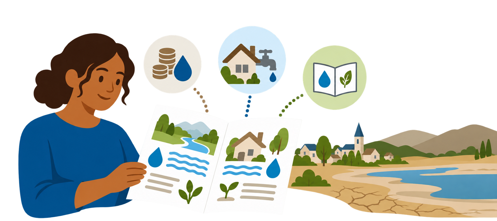
A readable draft still leaves questions about the circumstances its advice assumes.
Onions and the work of scrutiny
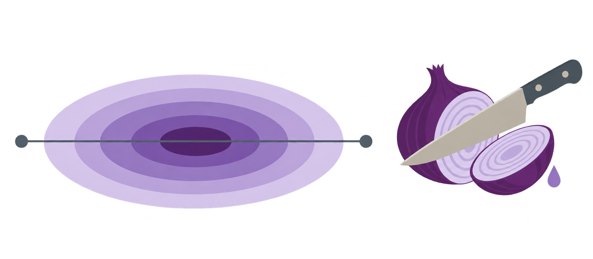
Onions represent layered assumptions and conditions. Chopping represents scrutiny.
The bot’s generative branch
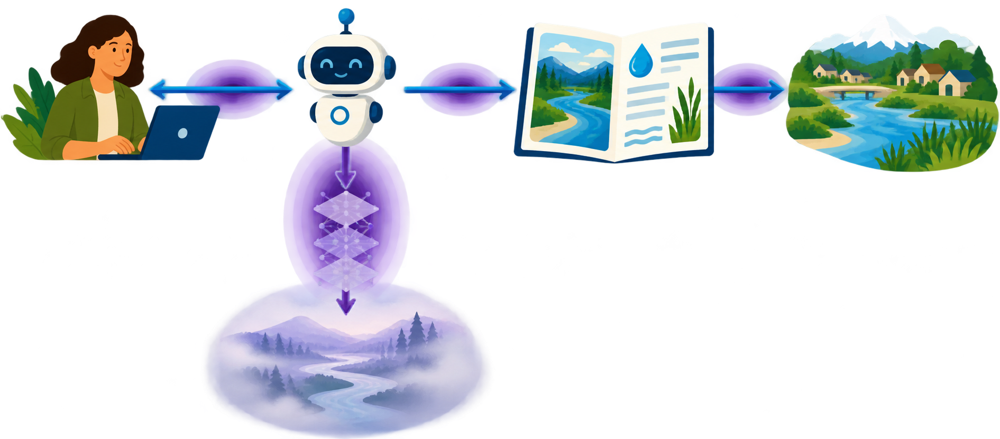
We can question assumptions in a bot’s response without establishing, from the conversation alone, how they arose.
Frictionless reasoning
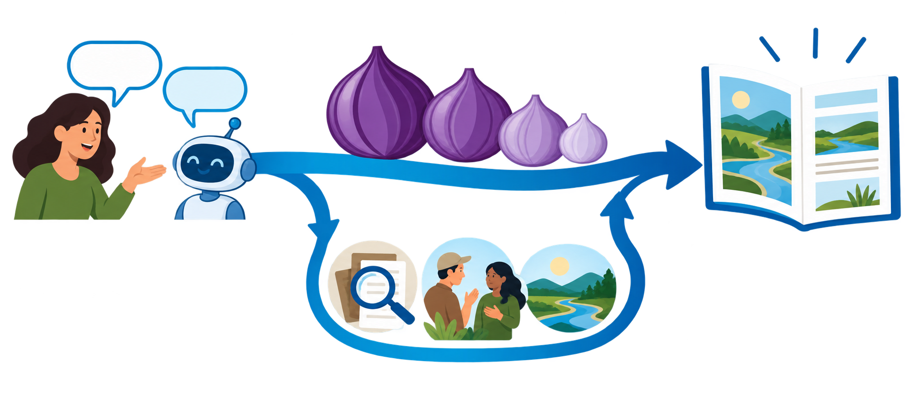
A coherent draft can carry us forward before we examine whether its assumptions fit.
My work at OWRD
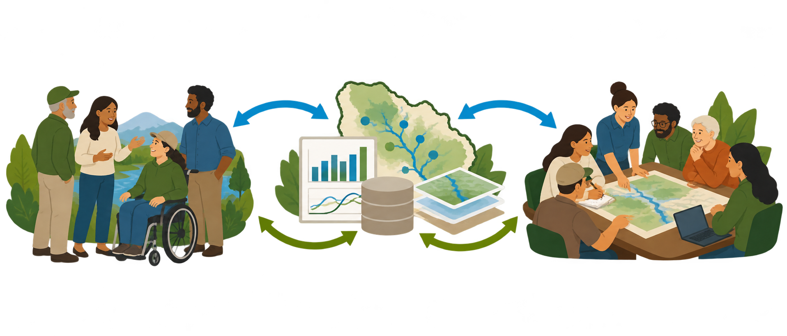
My technical-assistance work connects people and water data for planning.
Connecting people to data proactively
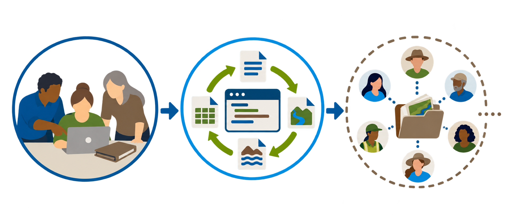
TAPs aims to make technical assistance available through open, reproducible products.
Can GenAI assist?
The work spans planning, design, implementation, testing, launch and user engagement.
Three touchpoints in an ongoing process
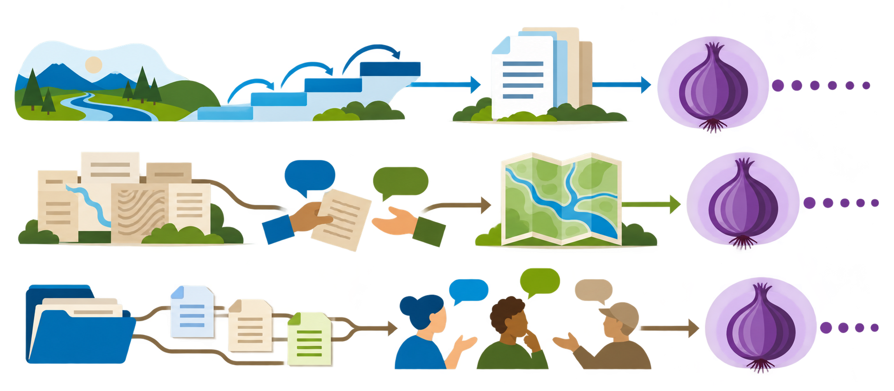
Planning, dataset design and implementation each introduce further equity questions.
Planning: a longer horizon
A long-term vision still requires choices about what to do now and whose capacity it assumes.
Planning: bringing reasoning into a record
A durable record addressed tracing difficulties while creating selection decisions and documentation burden.
WRIS: revising our understanding
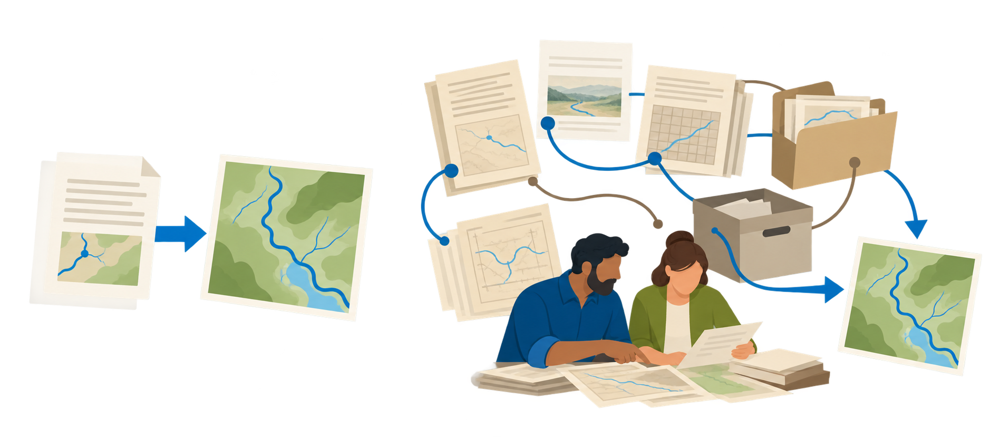
Learning sessions changed what I thought the records could provide directly.
WRIS: preserving the translation decisions
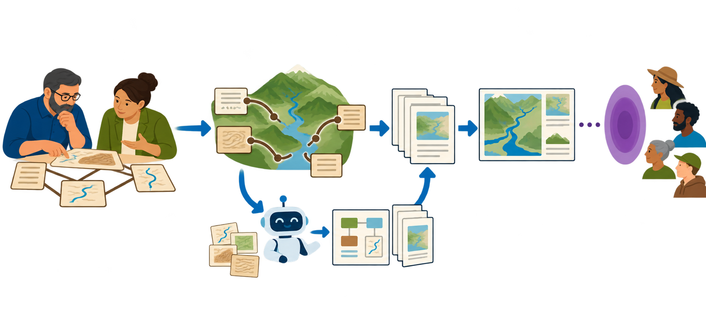
GenAI helped document our evolving understanding and the decisions shaping revised specifications.
Implementation: a smart folder
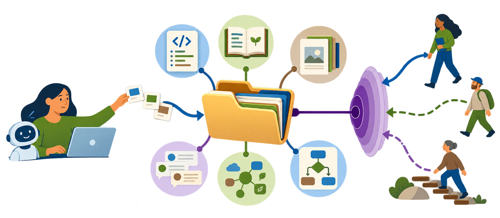
The smart folder connects GenAI assistance with a durable record—and opens questions about access and participation.
AI-assisted, not AI-dependent
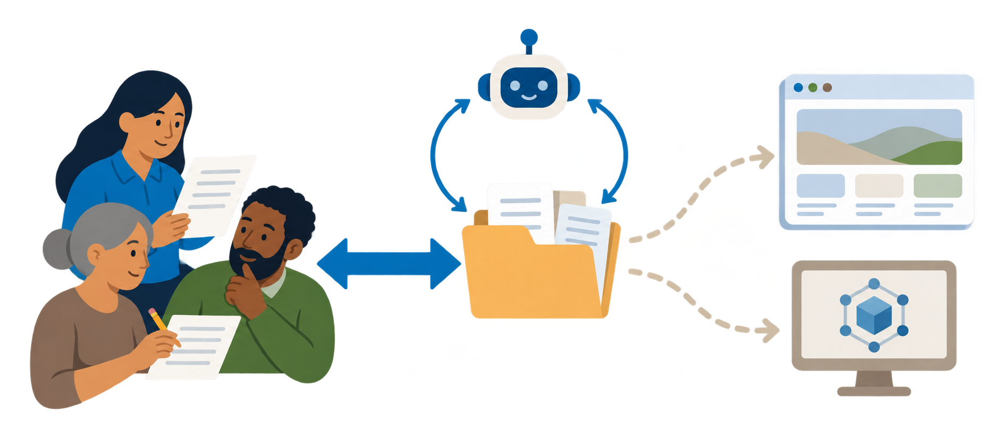
People should be able to read, question and maintain the record without GenAI.
How many onions are you willing to chop?
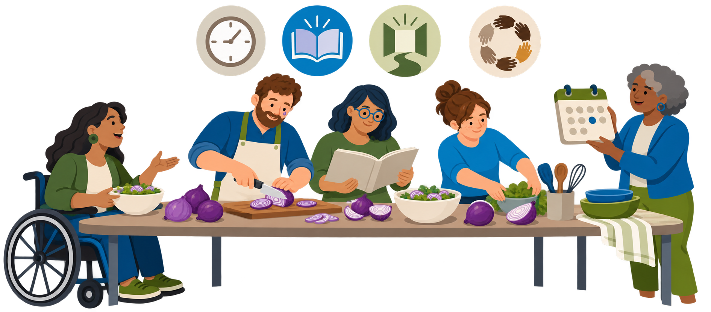
Scrutiny takes work. Who has the time, knowledge, access and authority to participate?
Our work within larger systems
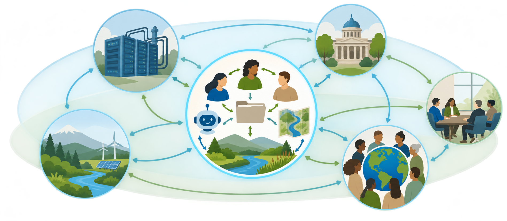
Our project decisions sit within larger systems of power and influence.
Conclusion: keeping equity questions open
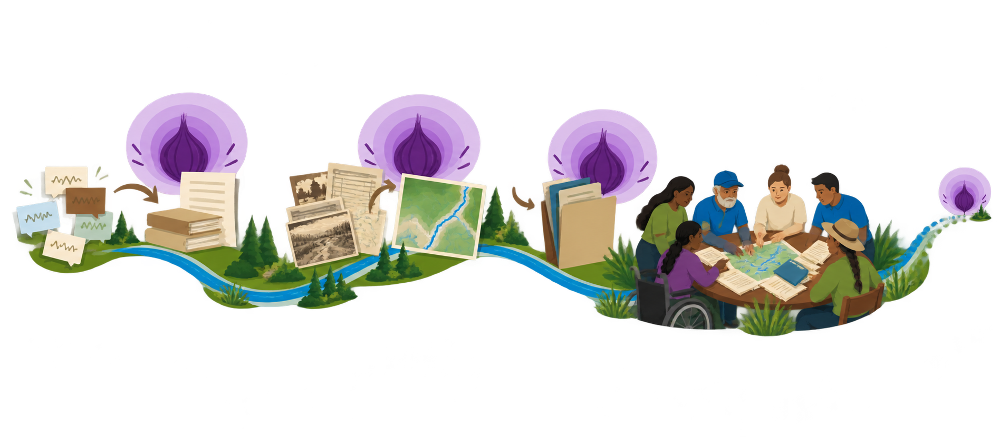
Each approach opens further equity questions. Productive resistance keeps them visible and open to participation as the work evolves.